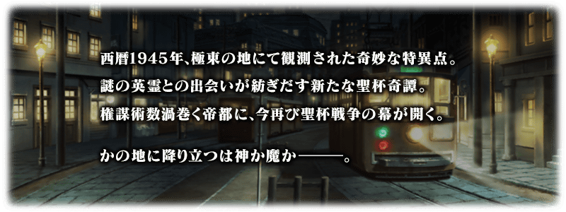
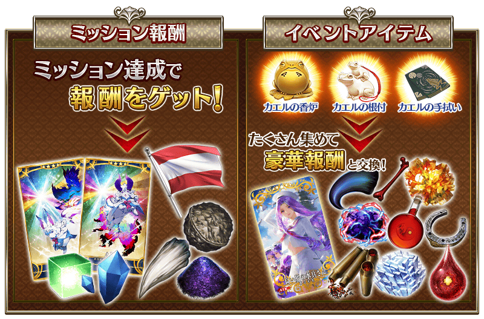
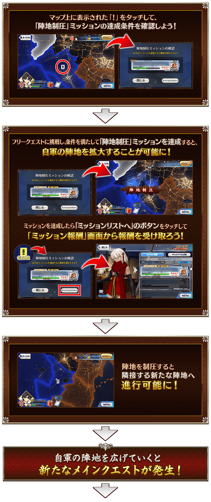
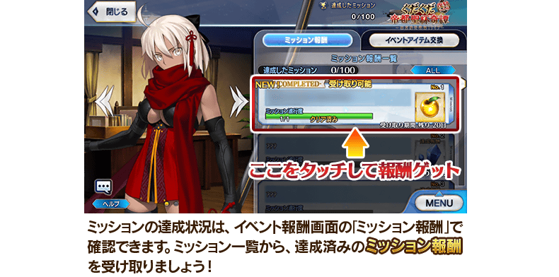
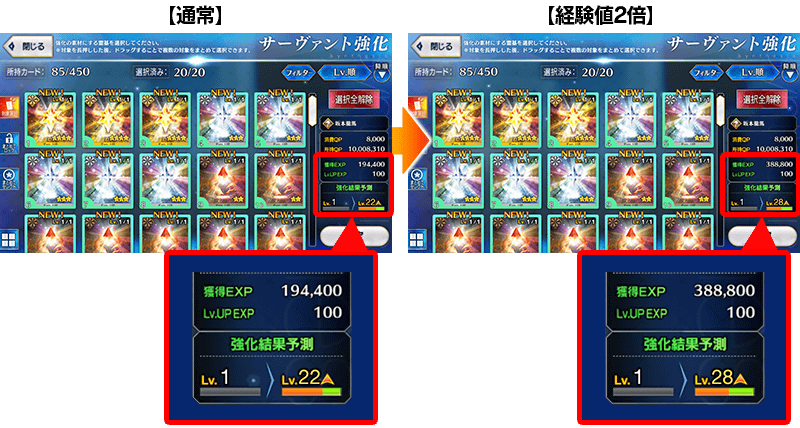
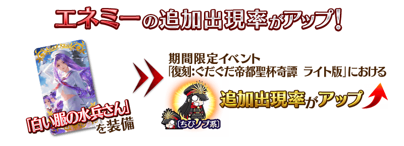
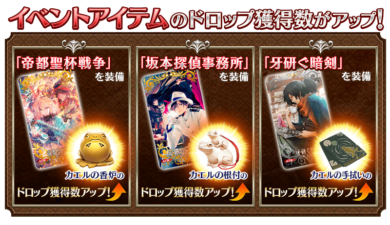
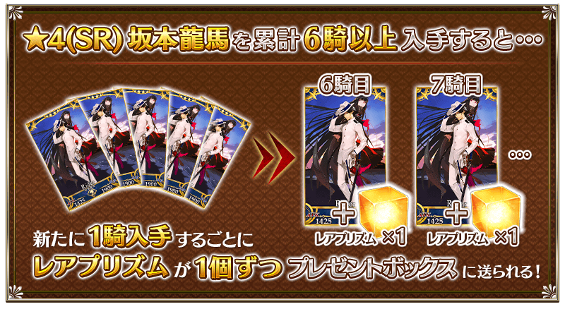

※本活動為再調整一部份在2018年舉辦的期間限定活動「GUDAGUDA帝都聖杯奇譚」更容易遊玩的「復刻輕量版活動」。 ※請注意上述圖片是在2018年舉辦當時刊載的內容。

◆活動舉辦期間◆
2019年4月12日(五) 17:00～4月26日(五) 11:59
◆活動概要◆
舉辦期間限定活動「復刻:GUDAGUDA帝都聖杯奇譚 輕量版」！
在帝都舞台掀起的GUDAGUDA活動第3彈物語與「坂本龍馬」一同奔走吧！
在本活動進行主線關卡的話，活動限定Servant★4(SR)坂本龍馬」將會期間限定加入。
推進主線關卡至後記(エピローグ)，讓「★4(SR)坂本龍馬」正式加入吧！
※本頁面皆為開發中圖片。會有與實際圖片相異的情況。 ※本活動為再調整一部份在2018年舉辦的期間限定活動「GUDAGUDA帝都聖杯奇譚」更容易遊玩的「復刻輕量版活動」。 ※在上次舉辦時獲得過「聖杯」的情況，本活動中會以「傳承結晶」代替「聖杯」做為通過報酬。 ※一部份的關卡為日後開放。
◆活動參加條件◆
滿足以下條件的Master才能參加
・通過「終局特異點」
※不需要通過亞種特異點(從Ⅰ至Ⅳ)及第2部序幕「序」。





※期間限定Servant「★4(SR)坂本龍馬」在通過日後開放的後記(エピローグ)後正式加入。
請注意於活動開始初期階段開放的主線關卡結束階段尚未正式加入。
◆後記開放時間◆
2019年4月19日(五) 17:00～

期間限定活動「復刻:GUDAGUDA帝都聖杯奇譚 輕量版」中會發生達成「收集特定的道具一定數以上」「擊倒特定的敵人」等各式各樣條件的話，可獲得豪華報酬獲得的任務！
另外，對應任務的達成狀況會開放新的任務和主線關卡。
攻略任務，邊獲得達成報酬邊推進主線關卡吧！

※請注意請注意光滿足通過條件是無法入手報酬的。 ※請注意未領取任務報酬的話，不會開放新的任務和地點。
【4月19日(五) 17:00追記】
以通過期間限定活動「復刻:GUDAGUDA帝都聖杯奇譚 輕量版」所有任務的Master做為對象，開放高難易度的挑戰關卡。
挑戰關卡就算通過後也不會消失，能無數次挑戰，可以變更Servant和概念禮裝的組合後再次挑戰。 ※關卡通過報酬、戰利品、Master經驗值、魔術禮裝經驗值、絆點數只可在初次通過時獲得。
◆挑戰關卡開放時間◆
2019年4月19日(五) 17:00～
◆挑戰關卡參加條件◆
滿足以下條件的Master才能參加
・通過期間限定活動「復刻:GUDAGUDA帝都聖杯奇譚 輕量版」的所有任務
◆挑戰關卡初次通過報酬◆
傳承結晶 1個
超值攻略方法・其1
本活動的期間中，強化「★4(SR)坂本龍馬」時的獲得經驗值變成2倍。
是讓成為活動加成對象的「★4(SR)坂本龍馬」等級一口氣上升的機會！
◆舉辦期間◆
2019年4月12日(五) 17:00～4月26日(五) 11:59

超值攻略方法・其2
本活動的期間中，下表的Servant在活動關卡中會得到「自身的攻擊威力提升」與「絆點數獲得量提升」的加成！
強化對象Servan，挑戰活動吧！
※活動加成的效果量因Servant而異。
※自4月11日(四) 17:00，在Servant選擇畫面和Servant強化畫面等，追加活動加成篩選器。
由於是只顯示於活動活躍Servant的便利功能，敬請活用。
【活動加成的效果量與對象Servant】
| 自身的 攻擊威力 |
絆點數 獲得量 |
職階 | 稀有度 | Servant名 |
|---|---|---|---|---|
| ＋100％ | ＋50％ | Rider | ★★★★ | 坂本龍馬 |
| Alterego | ★★★★★ | 沖田總司〔Alter〕 | ||
| ＋80％ | ＋20％ | Saber | ★★★★★ | 沖田總司 |
| Archer | ★★★★ | 織田信長 | ||
| Lancer | ★★★★ | 李書文 | ||
| Assassin | ★★★ | 岡田以藏 | ||
| Berserker | ★★★★★ | 土方歲三 | ||
| ★★★★ | 茶茶 | |||
| ＋50％ | Archer | ★★★★ | Emiya | |
| Rider | ★★★ | 美杜莎 | ||
| Caster | ★★★ | 美狄亞 | ||
| Assassin | ★★★★★ | 謎之女主角X | ||
| ★★★★★ | 李書文 | |||
| Berserker | ★★★★★ | 謎之女主角X〔Alter〕 |
※就算成為對象Servant，也會有不在本活動主線劇本登場的情況。
超值攻略方法・其3
裝備活動限定概念禮裝會提升活動限定敵人的追加出現率！
裝備可靠任務報酬和活動道具交換入手的活動限定概念禮裝「白い服の水兵さん」的話，會提升〔迷你信系〕敵人的追加出現率。
※追加出現率提升的〔迷你信系〕的敵人也包含「巨大信」等的活動限定敵人。 ※請注意在各關卡的敵人追加出現率就算顯示為100％以上的情況，效果仍為100％。

超值攻略方法・其4
裝備期間限定概念禮裝會提升活動道具的掉落獲得數！
裝備在聖晶石召喚Pick Up的期間限定概念禮裝「帝都聖杯戦争」「坂本探偵事務所」「牙研ぐ暗剣」的話，會提升活動道具「青蛙香爐」「青蛙掛墜」「青蛙手帕」各自的掉落獲得數。
※請注意各關卡的道具掉落率並非100％。

活動道具可自點擊管理室(ターミナル)畫面右上「活動報酬」鍵所顯示的「活動道具交換」畫面，交換以下的道。
◆交換期間◆
2019年4月12日(五) 17:00～5月3日(五) 11:59
※活動道具交換期間結束後「青蛙香爐」「青蛙掛墜」「青蛙手帕」會消失。
◆能用青蛙香爐交換的道具◆
 |
【活動限定概念禮裝】 【技能強化＆靈基再臨素材】 【靈基再臨素材】 【其他道具】 |
◆能用青蛙掛墜交換的道具◆
 |
【活動限定概念禮裝】 【技能強化＆靈基再臨素材】 【靈基再臨素材】 【其他道具】 |
◆能用青蛙手帕交換的道具◆
|
【活動限定概念禮裝】 【技能強化＆靈基再臨素材】 【其他道具】 |

|
★★★★★SSR
|

◆拿到活動限定概念禮裝EXP卡「ぐだぐだまじんさん」「ぐだぐだ土佐同盟」吧！◆
做為任務的達成報酬，可大幅強化概念禮裝的EXP卡登場！
無論如何請藉此機會，強化喜愛的概念禮裝！


◆靈基再臨◆
使用只能靠任務報酬入手的「海援隊旗」，重複4次靈基再臨的話，卡面會有所變化！

※坂本龍馬不會隨靈基再臨使戰鬥角色的外觀變化。
◆再入手特典◆
在復刻前的期間限定活動「GUDAGUDA帝都聖杯奇譚」入手「★4(SR)坂本龍馬」的情況，在本活動能獲得再入手特典。
入手「累計6位以上」「★4(SR)坂本龍馬」的話，第6位以後，每新入手1位就贈送稀有稜鏡1個至禮物箱。

介紹「★4(SR)坂本龍馬」的寶具演出！
在「Fate/Grand Order」官方網站內的公告中，以影片公開寶具演出，敬請確認。
其他還有，期間限定「復刻 GUDAGUDA帝都聖杯奇譚Pick Up召喚(每日交替)」同時舉辦！
關於詳情，請自下述橫幅確認。